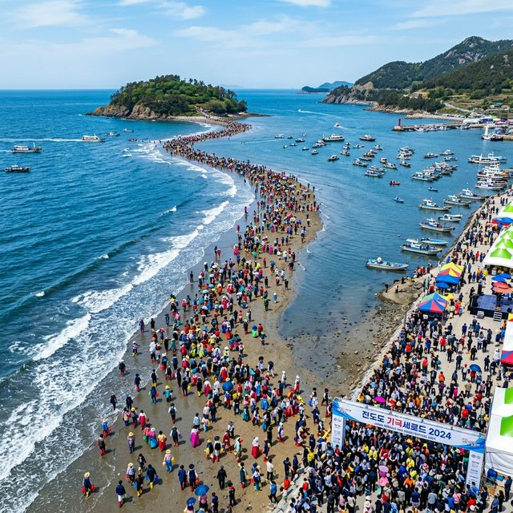
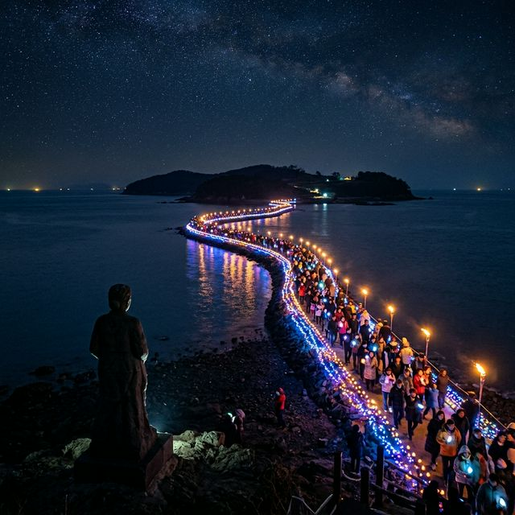

진도 신비의 바닷길 축제 2026 — 현대판 모세의 기적, 물때 시간표 및 야간 공연 총정리
전라남도 진도군에서 펼쳐지는 2026 진도 신비의 바닷길 축제는 바다가 갈라지는 경이로운 자연 현상을 눈앞에서 목격할 수 있는 세계적인 축제입니다. 4월 17일부터
20일까지 4일간 진행되는 이번 행사는 고군면 회동리와 의신면 모도 사이 약 2.8km의 바닷길이 열리는 장관을 배경으로, 진도만의 독특한 민속 문화와 다채로운 체험 프로그램을 선보입니다. 현대판
모세의 기적이라 불리는 이 신비로운 현상 속으로 여러분을 초대합니다!

바닷길이 열려 수만 명의 인파가 모인 진도 회동리 현장 | AI 제작 이미지
1. 신비의 바닷길: 자연이 빚어낸 경이로운 기적
진도 신비의 바닷길은 조수 간만의 차로 인해 해수면이 낮아질 때 바다 밑의 사주(砂州)가 드러나며 생기는 현상입니다. 너비 40~60m의 미려한 곡선을 그리며 펼쳐지는 이 길은 인위적으로 만들어진 것이
아니라, 오로지 대자연의 섭리에 의해 완성된 걸작입니다. 1975년 주한 프랑스 대사 피에르 랑디가 이를 목격하고 '한국판 모세의 기적'이라 세계 언론에 소개하면서 글로벌 명소로
거듭나게 되었습니다.
바닷물이 서서히 빠지기 시작하면 갯벌과 모래바닥이 모습을 드러내는데, 이때 발밑에서 느껴지는 축축한 감각과 짠 내음 가득한 바닷바람은 일상의 모든 고민을 잊게 해줍니다. 직접 바닷길 한복판에 서서 양옆으로
물러난 바다를 체감하는 경험은 그 어떤 영화적 연출보다도 강력한 시각적 충격을 선사합니다. 물때를 맞춰 길을 걷다 보면 자연의 거대한 힘 앞에 경건함마저 느끼게 되는 신성한 순간을 마주할 수
있습니다.
해양학자들에 따르면, 진도 앞바다는 지형적 특성상 조류의 흐름이 빠르고 수심이 얕아 이러한 사주가 잘 발달해 있다고 합니다. 2026년 축제는 이러한 자연 현상을 과학적으로 설명하는 교육 체험존을 강화하여,
아이들에게는 생생한 지구과학의 교과서가 되어주고 있습니다. 수치적으로 보면 매년 이 길을 걷기 위해 방문하는 외국인 관광객만 수만 명에 달하며, 이는 한국 축제 중에서도 가장 높은 글로벌 인지도를 자랑하는
지표 중 하나입니다.
2. 2026 물때 시간표 분석: 체험을 위한 최적의 골든타임
바닷길 축제에서 가장 중요한 것은 바로 물때 시간입니다. 아무리 일찍 도착해도 물때가 맞지 않으면 바닷길을 볼 수 없기 때문입니다. 2026년 축제 기간인 4월 17일부터
20일까지의 저조 시간(물이 가장 많이 빠지는 시간)은 오후 5시에서 7시 사이로 집중되어 있습니다. 이 시간대를 전후로 약 1시간 정도가 직접 길을 건널 수 있는 최고의 기회입니다.
다음은 공식 발표된 2026년 진도 신비의 바닷길 열림 시간표입니다. 방문 전 반드시 참고하여 전체 여행 일정을 조율하시기 바랍니다.
| 날짜 |
저조 시간 (바닷길 최대 개방) |
추천 체험 시간 |
| 4월 17일 (금) |
17:20 |
16:30 ~ 18:00 |
| 4월 18일 (토) |
18:00 |
17:00 ~ 18:30 |
| 4월 19일 (일) |
18:30 |
17:30 ~ 19:00 |
| 4월 20일 (월) |
19:10 |
18:10 ~ 19:40 |
바닷물이 들어오는 속도가 매우 빠르므로, 안전 요원의 통제에 따라 지정된 시간 내에 관람을 마치는 것이 중요합니다. 특히 발목까지 차오르는 바닷물을 밟으며 걷기 위해서는 무릎까지 오는
장화가 필수입니다. 축제장 입구에서 대여할 수 있지만, 위생이나 편의를 위해 미리 준비해오는 것도 좋은 방법입니다. 해가 질 무렵의 바닷길은 매서운 바닷바람이 불어올 수 있으니 보온성이
있는 바람막이 자켓을 지참하시길 권장합니다.

어둠 속에서 화려하게 빛나는 바닷길 야간 야행 현장 | AI 제작 이미지
3. 뽕할머니 전설과 영등살막의 역사적 울림
이 신비로운 현상 뒤에는 가슴 아픈 뽕할머니 전설이 전해져 내려옵니다. 옛날 호랑이의 습격을 피해 모도로 도망간 가족들을 그리워하며 용왕님께 기도하던 할머니를 위해 바다가 길을
내주었다는 이야기입니다. 축제장 입구에는 할머니가 바다를 향해 기도하는 동상이 세워져 있는데, 석양을 등진 할머니의 실루엣은 방문객들에게 코끝 찡한 감동을 선사합니다.
전설은 단순히 이야기로 끝나는 것이 아니라 '영등살막'이라는 전통 제례로 이어집니다. 무속 신앙과 공연이 결합된 이 의식은 풍어와 주민들의 안녕을 기원하는 종교적 의미를 담고 있습니다. 무당의 화려한 춤사위와
징, 꽹과리 소리가 바닷가를 가득 메우면 주변의 공기는 한순간에 성스러운 열기로 가득 찹니다. 2026년 축제에서는 이 전통 굿판을 현대적 감각으로 재해석한 대형 가무악극 '뽕할머니의 노래'를 통해 관객들과
더욱 깊게 소통하고 있습니다.
역사적으로 진도는 남도 예술의 본산으로 불려 왔습니다. 바닷길이 열리는 동안 곳곳에서 들려오는 강강술래와 남도들노래 소리는 이 축제가 자연 현상을 넘어서는 문화적 성지임을 확인시켜 줍니다. 전문가들은 이러한
스토리텔링이 축제의 생명력을 유지하는 핵심 동력이라고 평가합니다. 단순한 관광을 넘어 한 민족의 한과 흥이 자연의 조화와 만나는 독특한 인문학적 체험 공간으로서 진도의 가치가 더욱 빛나고 있습니다.
4. 축제의 밤: 야간 개방과 '미라클 조명' 퍼포먼스
2026년 축제의 가장 큰 변화는 야간 콘텐츠의 대폭 강화입니다. 저조 시간이 늦은 오후로 밀려남에 따라, 해가 진 뒤에도 바닷길을 즐길 수 있도록 수천 개의 고광도 LED
조명이 물길을 따라 설치되었습니다. 이름하여 '미라클 조명'이라 불리는 이 야간 퍼포먼스는 어둠이 내려앉은 바다 위에 신비로운 빛의 무지개를 띄우며 환상적인 분위기를 자아냅니다.
밤바다 특유의 깊은 파도 소리와 은은한 조명이 어우러진 바닷길을 걷는 것은 낮과는 전혀 다른 경험입니다. 조명 색상이 시시각각 변하며 뽕할머니 전설을 형상화하는 미디어 파사드 공연은 바다라는 거대한 캔버스
위에 그려지는 빛의 예술입니다. 밤하늘의 별빛과 수면 위로 산란하는 인공 조명이 결합되어 만들어내는 로맨틱한 풍경은 커플 방문객들에게 잊지 못할 '인생샷' 명당으로 입소문을 타고 있습니다.
운영진은 야간 안전을 위해 해상 경계를 강화하고, 가시거리를 확보할 수 있는 안개 인식 조명 시스템을 도입했습니다. 또한 행사장 곳곳에는 야행의 재미를 더하는 버스킹 공연과 푸드트럭이 배치되어 방문객들의 흥을
돋웁니다. 통계에 따르면 지난해 야간 방문객 비율이 전년 대비 45% 증가했으며, 이에 따라 올해는 야간 공연 시간대를 늘려 더욱 풍성한 볼거리를 제공하고 있습니다.
5. 진도의 자부심: 천연기념물 진도개 묘기 공연
진도 여행에서 절대 빠질 수 없는 요소는 바로 진도개입니다. 축제 기간 동안 매일 오전과 오후, 주 무대 옆 공연장에서는 진도개의 지능과 충성심을 확인할 수 있는 묘기 공연이
열립니다. 활기차게 무대를 누비는 진도개들은 장애물 통과, 암습 대처, 심지어 그림 그리기와 글씨 쓰기까지 선보이며 관객들을 놀라게 합니다. 특히 꼬리를 살랑이며 관객들과 교감하는 영특한 눈망울을 보고 있으면
누구나 진도개의 매력에 빠질 수밖에 없습니다.
진도개는 단순한 애완견을 넘어 한국의 제53호 천연기념물로 보호받고 있는 귀중한 유산입니다. 공연 후에는 진도개 테마파크를 방문하여 아기 진도개들과 소통하거나, 올바른 훈련법을 배워보는 체험 프로그램도
마련되어 있습니다. 흙먼지를 일으키며 달리는 날렵한 몸놀림 속에서 수천 년간 이 땅을 지켜온 진도개만의 강인한 혈통과 기개를 생생하게 느낄 수 있습니다.
최근 연구에 따르면 진도개는 주인에 대한 일편단심 충성심뿐만 아니라 뛰어난 수렵 본능을 가지고 있다고 합니다. 축제장에서는 이러한 특성을 실감 나게 보여주기 위해 '가상 사냥 시연' 프로그램을 도입했습니다.
동물 보호 단체와의 협력을 통해 인도적인 방식으로 진행되는 이 시연은 진도개가 가진 야생의 생명력을 교육적으로 전달하며, 생명 존중의 가치를 함께 나누는 뜻깊은 시간을 선사합니다.
영특한 지능과 충성심으로 묘기를 선보이는 진도의 명물 진도개 | AI 제작 이미지
6. 미식 투어(1): 진도홍주, 붉은 지초의 유혹
진도의 맛을 논할 때 가장 먼저 언급되는 것은 선명한 붉은 빛깔의 진도홍주입니다. 고려시대부터 전해 내려오는 이 술은 보리와 지초(芝草)를 주재료로 하여 40도 이상의 높은
도수를 자랑하지만, 목 넘김이 부드럽고 향이 깊은 것이 특징입니다. 축제장 시음 코너에 가면 투명한 잔에 담긴 홍주의 영롱한 자태를 볼 수 있는데, 그 붉은색은 뽕할머니의 일편단심 마음을 닮았다고도
전해집니다.
홍주는 단순히 독주가 아니라 약술로도 평가받습니다. 원재료인 지초에는 소화 불량 개선과 항염 작용을 돕는 '시코닌' 성분이 풍부하여, 과거 어부들이 추운 바다에 나가기 전 몸을 보하기 위해 마셨던 역사가
있습니다. 한 모금 마시면 혀끝을 자극하는 알싸한 맛 뒤로 은은한 뿌리 식물의 단맛이 따라오며, 몸 안에서부터 전해지는 따뜻한 온기가 여행의 고단함을 씻어줍니다. 선물용으로 인기가 높은 '진도홍주 칵테일'
킷트도 축제장에서만 저렴하게 구매할 수 있습니다.
2026년 현재 진도홍주는 현대적인 브랜딩을 통해 젊은 세대를 공략하고 있습니다. 토닉워터와 레몬을 섞은 '홍주 하이볼'은 축제 현장 푸드코트에서 가장 많이 팔리는 메뉴 중 하나입니다. 전문 바텐더들은 홍주
본연의 향을 해치지 않으면서도 과일 향과 탄산감을 극대화한 독창적인 레시피를 매일 새롭게 선보입니다. 이러한 전통의 현대화는 진도홍주가 단순한 민속주를 넘어 글로벌 주류 시장으로 나아가는 발판이 되고
있습니다.
7. 미식 투어(2): 밭에서 나는 황금, 진도 울금 요리
진도의 또 다른 보물은 국내 생산량의 70% 이상을 차지하는 진도 울금입니다. 카레의 핵심 성분인 커큐민이 풍부한 울금은 이곳 진도의 비옥한 토양과 해풍 속에서 최고의 품질로
자라납니다. 축제장 먹거리 장터에 발을 들이면 울금을 넣은 노란색 반죽의 '울금전'과 '울금 수제비', 그리고 건강한 감칠맛이 일품인 '울금 돼지 수육' 등 황금빛 미식의 향연이 펼쳐집니다.
울금 요리를 한 입 먹으면 특유의 쌉싸름한 맛이 기분 좋게 식욕을 자극합니다. 특히 해산물 요리에 울금을 넣으면 비린내를 잡아주고 풍미를 한층 높여주는데, 진도 앞바다에서 갓 잡아 올린 싱싱한 낙지와 전복에
울금을 가미한 '울금 해물삼합'은 이곳의 필살기 메뉴입니다. 노란색 음식이 주는 시각적인 즐거움과 더불어 혈맥 순환을 돕는 건강적 효능까지 챙길 수 있어 부모님을 동반한 가족 관광객들이 가장 선호하는
메뉴입니다.
건강식에 대한 관심이 높아지면서 진도군은 울금 가공 산업을 집중적으로 육성하고 있습니다. 축제장 부스에서는 간편하게 먹을 수 있는 울금 분말, 울금 젤리, 심지어 울금을 함유한 화장품까지 만나볼 수 있습니다.
실제 실험 결과 진도산 울금은 타 지역 대비 커큐민 함량이 약 3배 이상 높은 것으로 나타났으며, 이는 진도 여행객들이 믿고 구매하는 강력한 이유가 됩니다. "진도에 오면 울금으로 몸을 씻고 간다"는 말이
있을 정도로 울금은 진도 생활 문화의 깊숙한 곳에 자리 잡고 있습니다.
8. 연계 관광 추천: 세방낙조와 운림산방의 운치
바닷길 체험을 마친 뒤에는 진도의 또 다른 명소 두 곳을 방문해 보시길 권장합니다. 첫 번째는 한국 최고의 일몰지로 꼽히는 세방낙조입니다. 다도해의 수많은 섬 사이로 붉은 해가
가라앉는 풍경은 마치 거대한 동양화를 보는 듯한 장엄함을 선사합니다. 수면 위로 금빛 가루를 뿌려놓은 듯한 반영과 섬들의 실루엣은 사진가들에게는 성지와도 같은 곳이며, 하루를 정리하는 명상의 시간으로 더할
나위 없습니다.
두 번째는 남종화의 거장 소치 허련 선생이 말년을 보낸 운림산방입니다. 울창한 숲과 연못, 그리고 단아한 기와집이 어우러진 이곳은 '안개 낀 숲이 구름처럼 산을 감싼다'는
이름처럼 몽환적이고 고즈넉한 아름다움을 자랑합니다. 툇마루에 앉아 정원의 연못을 바라보며 마시는 차 한 잔은 축제의 소란스러움을 잠시 잠재우고 내면의 평화를 찾는 소중한 시간을 제공합니다.
세방낙조 전망대와 운림산방 사이에는 드라이브 코스로 유명한 '진도 해안도로'가 연결되어 있습니다. 창문을 열고 달리면 쏟아지는 봄 햇살과 달콤한 숲 내음이 차 안으로 밀려 들어옵니다. 이 코스는 2026년
'대한민국에서 가장 아름다운 길' 30선에 선정될 만큼 빼어난 경관을 자랑하며, 단순히 목적지로 가는 이동 수단이 아닌 여행 그 자체로서의 기쁨을 줍니다.
9. 방문객 실전 가이드: 주차 및 셔틀버스 이용 팁
진도 바닷길 축제는 매일 수만 명의 인파가 몰리므로 교통 대책을 미리 숙지하는 것이 필수입니다. 축제장 주변 도로는 일방통행으로 지정되거나 통제되므로 자가용 이용 시 반드시
초입에 위치한 '임시 주차장'에 주차해야 합니다. 주차장에서 행사장까지는 무료 셔틀버스가 5~10분 간격으로 운행되므로, 무리하게 행사장 근처로 진입하여 시간을 낭비하지 않는 것이 건강한 여행의
지름길입니다.
축제 기간에는 '진도 시티투어 버스'가 전국 주요 거점에서 운행됩니다. 운전의 피로 없이 축제를 즐기고 싶다면 이를 활용해 보세요. 또한 최근 2026년에 신설된 스마트 주차 안내 시스템을 통해 모바일로 현재
빈자리를 실시간으로 확인할 수 있습니다. 인근 숙박 시설은 축제 몇 달 전부터 매진되는 경우가 많으므로, 예약이 늦었다면 진도읍내의 한옥 체험이나 인근 해남, 강진 지역의 숙소를 고려해 보는 것도
전략입니다.
마지막으로 '진도 신비의 바닷길 축제' 공식 앱을 설치하면 증강현실(AR)을 활용한 뽕할머니 찾기 이벤트와 디지털 스탬프 투어에 참여할 수 있습니다. 스탬프를 모두 모으면 지역 화폐나 기념품을 받을 수 있으니
소소한 재미를 놓치지 마세요. 깨끗한 여벌 옷과 수건, 그리고 무엇보다 자연을 아끼는 성숙한 관광객의 마음가짐만 있다면 2026년 진도의 봄은 당신의 기억 속에 가장 찬란한 '기적의 순간'으로 남을 것입니다.
#진도신비의바닷길축제
#현대판모세의기적
#진도가볼만한곳
#4월축제일정
#진도물때시간표
#진도개공연
#진도홍주
#세방낙조
#봄여행지추천
#역사문화축제